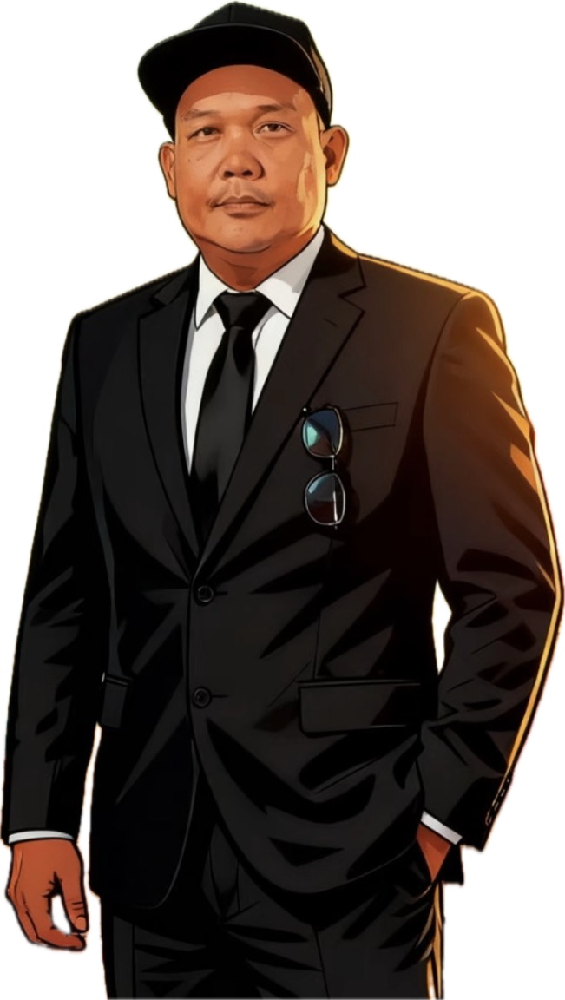
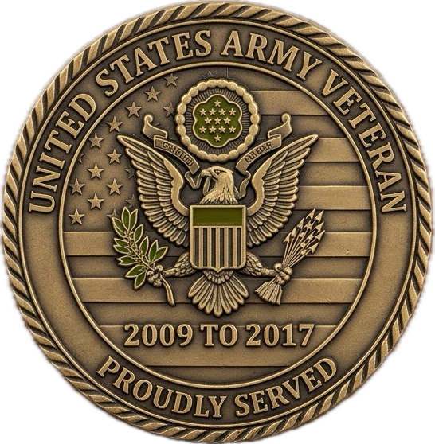
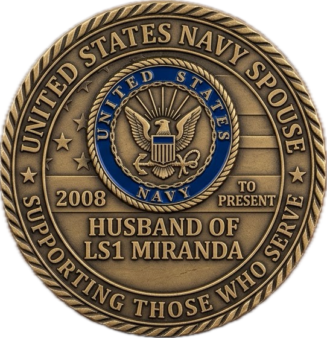

Hello! I'm TJ Miranda, a passionate web developer and designer. I specialize in creating responsive and user-friendly websites.
Professional Background & Experience
Licensed Utility Systems Operator and US Army Reserve Veteran with over 10 years of combined federal civil service, defense contracting, and military logistics experience. Skilled in operating SCADA systems, conducting water/wastewater quality laboratory testing, and automating administrative workflows through software and database solutions.
Quick Highlights
- Current Role: Utility Systems Operator (WG-5406-10) at NAVFAC NAS Lemoore
- Certifications: California Water Treatment T2, Water Distribution D2, Wastewater WW1-OIT
- Education: B.S. Computer Science | A.S. Information Technology (In Progress at West Hills College Lemoore)
- Security Clearance: Active Secret Clearance
Biography

A technology and music enthusiast from Oriental Mindoro,
Philippines, I have always loved tinkering with computers. Back in
the 1990s, my friend Jello and I spent endless hours coding together
as tech pioneers in our province. Jello was an accounting major who
was fantastic with numbers, as well as a talented pianist and bass
player.
After graduating with a BS in Computer Science, I moved to the
United States. My career here shifted away from technology, and over
time, my old programming skills in C++, Visual Basic, and COBOL
faded until I forgot how to code. I tried getting back into it with
PHP and MySQL, but I lost my appetite for manual coding once AI came
along. Lately, I have been leaning on AI to help build my personal
projects, even if I have been a bit lazy with them.
With retirement just a few years away, I recently went back to
college to get familiar with coding again. I am getting a little
forgetful, so studying programming helps sharpen my memory while
letting me enjoy the fun of learning and relearning. When I am not
at my computer, I still love playing basic guitar and drums to keep
my mind active and creative.
Skills
- Water Treatment Plant Operations
- Wastewater Treatment Plant Operations
- Global Supply Chain Management
- Tool Control Program Management
Five Fun Facts About Me
-
I love playing drums and guitars.
I wouldn’t call myself a professional musician, but playing the drums and guitar serves as my ultimate reset button. Music has always been a constant presence in my life, providing an outlet where words often fall short. Picking up an instrument allows me to channel my focus entirely into rhythm and sound, creating a space where the rest of the world briefly fades away.
Whenever I have downtime or need to shake off a long, demanding day, sitting behind a drum kit or grabbing a guitar is my go-to remedy. The physical action of keeping time or strumming chords helps release built-up tension in a way that few other hobbies can match. It is a tactile, engaging experience that grounds me in the present moment.
For me, playing isn't about stepping onto a stage, getting technical perfection, or trying to impress an audience. It is pure noise therapy and personal recreation. Stripping away the pressure to perform turns the process into a completely judgment-free zone where making mistakes is just part of the fun.
The contrast between the two instruments also offers different forms of mental relief. Drums provide a raw, energetic dynamic that lets me physically burn off stress through tempo and power. On the other hand, the guitar offers a more contemplative, melodic avenue when I simply want to sit back and vibe out.
Ultimately, having these musical outlets keeps me balanced and energized. Whether I am spending ten minutes jamming to a favorite track or spending an hour casually experimenting with new rhythms, it remains one of the most effective tools I have for clearing my head and recharging my spirit.
-
I enjoy traveling and exploring new places.
I love to travel and explore new places, constantly seeking out opportunities to step beyond my familiar surroundings. The initial excitement of setting out on a journey—whether planning routes or packing a bag—always brings a distinct sense of anticipation. Every trip feels like a fresh chapter waiting to be written.
Traveling allows me to experience different cultures, taste authentic local food, and step into environments completely different from my day-to-day routine. Seeing how people live, work, and connect across various regions offers a powerful reminder of how vast and diverse the world really is.
Along the way, meeting new people is often the highlight of any trip. Sharing stories with locals and fellow travelers provides unique insights that you can never get from a travel guide or a website. These spontaneous human connections frequently turn into the most memorable parts of the entire journey.
Gaining a fresh perspective on life is another invaluable benefit of hitting the road. Leaving my comfort zone helps me reframe daily challenges, broadens my mindset, and instills a deeper sense of adaptability and gratitude for every experience—both good and challenging.
Whether it is a quick weekend getaway to a nearby town or an extended adventure across the globe, I am always up for discovering something new. The world is full of hidden gems, breathtaking sights, and compelling stories, and I intend to keep exploring them whenever the opportunity arises.
-
I'm a big fan of Metallica.
I am a massive fan of Metallica, and their music has been a constant soundtrack through many different chapters of my life. From the moment I first heard their iconic heavy riffs and fast rhythms, I was hooked on the intense energy and technical skill they bring to the metal genre.
Their albums have a distinct way of matching almost any mood, offering motivation when I need a drive boost or catharsis when dealing with frustration. Tracks like "Master of Puppets," "One," and "Fade to Black" demonstrate a depth of composition and lyrical power that continues to stand the test of time.
Beyond their studio releases, I especially love their live performances. The incredible stamina, raw sound, and sheer presence Metallica delivers on stage make their concerts an unforgettable spectacle. The way they command massive stadium crowds while staying intensely connected to their audience is unmatched.
As someone who plays instruments casually, listening to their music gives me a deep appreciation for the craft. James Hetfield’s tight rhythm guitar work and Lars Ulrich’s driving drum beats provide endless inspiration whenever I pick up a guitar or sit down behind a drum kit.
Metallica is more than just a band I listen to; they represent a legacy of resilience, evolution, and dedication to music. Decades into their career, they continue to set the benchmark for heavy metal, keeping fans like me fully invested in their journey.
-
My favorite colors are red and blue.
Red and blue are my absolute favorite colors, each bringing a unique visual weight and meaning to my personal aesthetic. I find that these two colors sit at fascinating opposite ends of the spectrum, offering a compelling balance when brought together.
Red brings an unyielding energy, boldness, and passion. It draws immediate attention, symbolizing strength, action, and excitement. Incorporating red into design or daily choices adds a vibrant spark that feels dynamic and confident.
In contrast, blue provides a sense of calmness, depth, and serenity. Reminiscent of the open ocean and vast sky, it carries a tranquil quality that brings stability, focus, and peace to any visual space it occupies.
What impresses me most is how well they complement each other when paired. The intensity of red contrasts beautifully with the cooling nature of blue, creating a vibrant visual harmony that can evoke a vast range of emotions, from high energy to settled composure.
Together, red and blue represent the balance between power and peace—an equilibrium I appreciate in both art and everyday life. Whether in fashion, design, or simple personal preferences, these two timeless colors always stand out to me.
-
I'm a US Army Veteran and a proud US Navy Spouse.
I am deeply proud to have served in the United States Army and equally honored to stand as the spouse of an active US Navy service member. This unique dual connection to the military has provided me with a profound appreciation for service, sacrifice, and the commitment required to protect our nation.
My personal experiences in the Army played a fundamental role in shaping who I am today. The military instilled in me core values like discipline, adaptability, teamwork, and resilience under pressure—qualities that continue to guide my personal and professional life every day.
Transitioning into the role of a Navy spouse gave me a new perspective on military life. Supporting my partner through the unique demands of naval service—such as deployments, frequent relocations, and unpredictable schedules—requires a different kind of strength, patience, and dedication.
Being part of both the Army and Navy communities has connected me with extraordinary individuals from all walks of life. The shared bonds, unspoken understanding, and mutual support found within military families create an incredibly strong sense of belonging and community resilience.
Ultimately, I am deeply grateful for the opportunities, growth, and lifelong relationships that have come from both wearing the uniform and supporting one. These military roots form a strong foundation for my family, reminding us daily of the value of duty, flexibility, and service.

